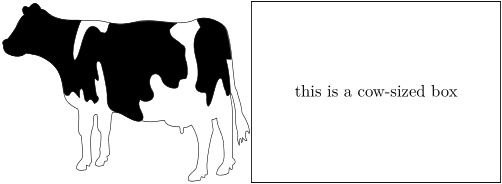
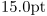
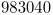
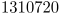

ConTeXt implements extensions from eTeX including the evaluation of expressions (quoted from the eTeX manual):
Expressions
eTeX introduces the notion of expressions of type number, dimen, glue, or
muglue, that can be used whenever a quantity of that type is needed. Such
expressions are evaluated by eTeX's scanning mechanism; they are initiated
by one of the commands \numexpr, \dimexpr,
\glueexpr, or \muexpr
(determining the type t) and terminated by \relax (which
will be absorbed by the scanning mechanism). An expression consists of one
or more terms of the same type to be added or subtracted; a term of type t
consists of a factor of that type, optionally multiplied and/or
divided by numeric factors; finally a factor of type t is either a
parenthesized subexpression or a quantity (number, etc.) of that type.
Examples
It has been pointed out that
the only important thing for \dimexpr is to write the dimen value
as first value after the \dimexpr command and then the numeric values.
Notice that the following expression is also valid:
-
\setupexternalfigures[location={local,default}] \placesidebyside{\externalfigure[cow][width=.4\textwidth]} {\framed[width=.4\textwidth,height=\dimexpr.4\textwidth*200/275\relax] {\vbox{this is a cow-sized box}}}
- 
| TODO: Add some more illustrative examples. (See: To-Do List) |
More on evaluating expressions in ConTeXt
Whereas the eTeX \dimexpr is quite useful,
one must be aware of its limitations arising from how integer arithmetic is performed within TeX.
Following a discussion on the ConTeXt mailing list,
http://archive.contextgarden.net/thread/20090323.122228.af43852e.en.html
this will be illustrated through a pedagogical example (including, as a bonus, a few handy tricks):
Our question today is how to divide two dimension and compare their result with the result of another division. To do this, we first assign values to four dimensions. Then, we will try using eTeX functions with ConTeXt; the following example should work:
-
\dimen0=15pt \dimen2=20pt \dimen4=15pt \dimen6=30pt \ifdim\dimexpr\dimen0/\dimen2\relax<\dimexpr\dimen4/\dimen6\relax The second fraction is greater. \else The first fraction is greater. \fi
This appears to work, but does it really? What will be the result if the second fraction were to be greater:
-
\dimen0=15pt \dimen2=20pt \dimen4=15pt %\dimen6=30pt \dimen6=15pt \ifdim\dimexpr\dimen0/\dimen2\relax<\dimexpr\dimen4/\dimen6\relax The second fraction is now greater. \else The first fraction is still greater. \fi
What is going on here? The result is weird and unexpected. Why did this happen? Is TeX broken? Let's take a closer look at the real values of the dimensions and their results after division:
-
\dimen0=15pt \the\dimen0{}
- 
which has a real internal value of
-
\dimen0=15pt \number\dimen0{}
- 
in scaled points. Only the second integer value (in scaled points) is important for our calculation. We also need to know the internal value of the second dimension:
-
\dimen2=20pt \number\dimen2
- 
Finally, we would like to know the result of the division of these two numbers:
-
\dimen0=15pt \dimen2=20pt \number\dimexpr\dimen0/\dimen2\relax
The result of the integer division is 1 (rather than the decimal 0.75); This illustrates that the result of dividing two numbers that are nearly equal within TeX is not very useful. We can get around this by multiplying the numerators by some large factor, assuring that the evaluated fractions remain integer:
-
\dimen0=15pt \dimen2=20pt \dimen4=15pt %\dimen6=30pt \dimen6=15pt \ifdim\dimexpr100\dimen0/\dimen2\relax<\dimexpr100\dimen4/\dimen6\relax The second fraction is now greater. \else The first fraction is still greater. \fi
The important point to keep in mind is that TeX performs integer arithmetic in units of scaled points. Therefore, one must be careful, especially when using divisions that may lead to integer rounding.
LuaTeX
Alternatively, we can use luaTeX to reliably get the correct result. The tex.dimen command allows us to access the \dimen register from TeX in Lua.
\dimen0=15pt \dimen2=20pt \dimen4=15pt \dimen6=30pt \startluacode if tex.dimen[0] / tex.dimen[2] < tex.dimen[4] / tex.dimen[6] then tex.sprint("The second fraction is greater.") else tex.sprint("The first fraction is greater.") end \stopluacode
and
\dimen0=15pt \dimen2=20pt \dimen4=15pt %\dimen6=30pt \dimen6=15pt \startluacode if tex.dimen[0] / tex.dimen[2] < tex.dimen[4] / tex.dimen[6] then tex.sprint("The second fraction is now greater.") else tex.sprint("The first fraction is still greater.") end \stopluacode
The output is now correct in both cases without making use of any tricks.